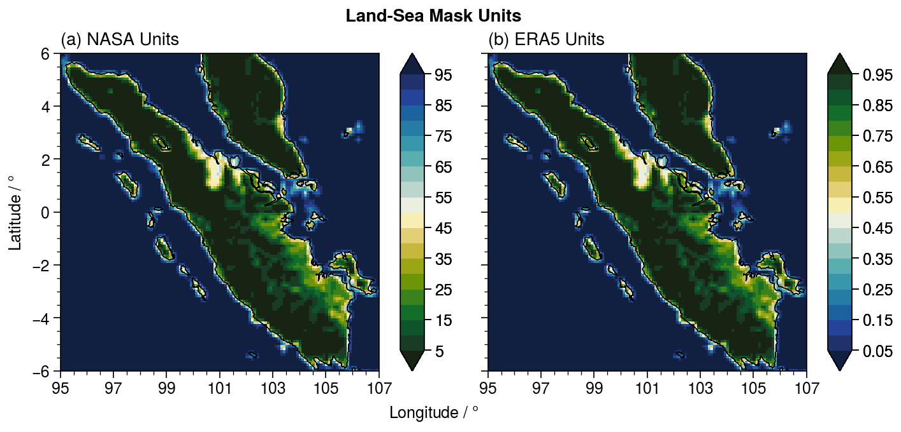

Land-Sea Mask Datasets
Along with the precipitation data, NASA also provides global land-sea masks at the same resolution as the IMERG and TRMM datasets. NASAPrecipitation.jl is able to retrieve these land-sea masks that allows for us to easily distinguish between precipitation data points over land and over the ocean.
NASAPrecipitation.jl converts the land-sea mask provided by NASA to the same units as the ERA5 reanalysis land-sea mask. 0 represents fully ocean, while 1 represents fully land.

NASAPrecipitation.jl also allows for the specification of a GeoRegion within which a For more information on the api for downloading the land-sea masks. The default (if a GeoRegion is not specified) is to download for the entire globe.
The API for downloading Land-Sea Mask dataset is found in the page Download API.